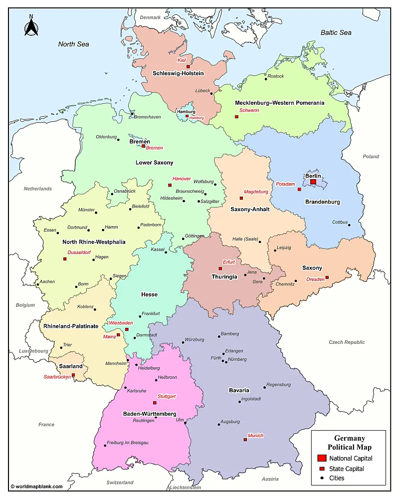

Tagasi
Saksamaa (ametlikult Saksamaa Liitvabariik) on föderaalne vabariik Kesk-Euroopas. See piirneb Taani, Poola, Tšehhi, Austria, Šveitsi, Prantsusmaa, Luksemburgi, Belgia ja Hollandiga. Põhjas moodustavad loodusliku riigipiiri Põhjameri ja Läänemeri.
Asustatud: 843
Pealinn-Berliin
Keel -- saksa keel
Rahva arv -- 83 577 140
Linnad mida olen külastanud: Berliin, Dresden, Nuremberg
Mida olen saavutanud selle reismisega:
Ajalugu õppinud:✅
Kohaliku toitu proovinud:✅
Kohaliku elamust proovinud:✅
